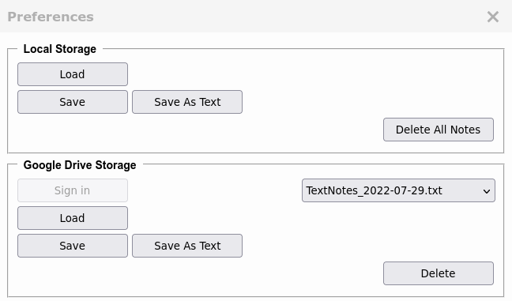
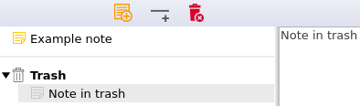

Troubleshooting
What are the main features of TextNotes?
TextNotes is a simple note extension with basic features:
- Storing notes in the permanent storage of a browser
- Showing titles of notes in flat tree control
- Maintaining notes : add, delete, drag&drop, context menu
- Trashbin for deleted notes
- Keyboard support
- Hyperclick on URLs, supporting foreground and background tabs
- Saving and loading data
- Adding any selected text on pages to TextNotes via context menu
- Synchronization among multiple instances
How to launch TextNotes?
TextNotes can run in a tab or in a popup window. You can launch it various ways.
Tab:
- Click on TextNotes icon on toolbar.
- Click on TextNotes item in context menu if no text selection.
- Press Ctrl+Alt+O keys. It is configurable in Manage Extension Shortcuts
Popup window:
- Press Ctrl and Click on TextNotes icon on toolbar.
- Press Ctrl+Alt+P keys. It is configurable in Manage Extension Shortcuts
And TextNotes will be launched on a background tab if you click on
Add Selected Text to TextNotes in context
menu after text selection and there is no running TextNotes in any window.
Is there keyboard support?
Tree control has focus :
| Key(s) | Action |
|---|
| Ins | New Note |
| Ctrl+Ins | New Separator |
| Del | Delete the current note |
| Up Arrow | Show the previous note |
| Down Arrow | Show the next note |
| Tab | Jump to TextArea |
TextArea has focus :
| Key(s) | Action |
|---|
| Tab | Print tab |
| Shift+Tab | Jump to Tree control |
Return to top
How to use hyperclick?
Mouse cursor on
TextArea:
| Mouse + Key(s) | Action |
|---|
| Ctrl + Long Click (CapsLock Off) | Open link in a new foreground tab |
| Ctrl + Long Click (CapsLock On) | Open link in a new background tab |
How does it work?
-
Ctrl+MouseDown
TextNotes selects the link around the cursor in the same line.
-
Ctrl+MouseUp
TextNotes opens the selected text as a link.
After pressing
Ctrl+MouseDown you have to wait a moment so that link can be selected.
Do not move the mouse after pressing
Ctrl+MouseDown!
Supported protocol names :
http, https, ftp, file
Can I save and load data?
You can save and load your notes via the
Preferences menu item (top-right corner):

TextNotes supports two kinds of file formats :
- Compressed files with a .tn extension
- Readable plain text files with a .txt extension
You can save and load data using either kind.
The format of the plain text file is public so you can feed TextNotes with data files that you created.
Details :
Can TextNotes load data files created by users?
Where does TextNotes store the data?
TextNotes stores data on your local machine in permanent storage for WebExtensions.
It is theoretically unlimited.
Details :
Firefox Local Storage [↷]
These data cannot directly be read by users.
Is TextNotes reliable?
Yes, TextNotes is reliable if you use it in the proper way.
TextNotes stores the data in its own storage but this storage cannot be read by users.
You have to consider the value of your data and use some backup fitting the importance of your data.
You may face the following errors:
Some program error occurs and TextNotes destroys your data.
It is a fact that there is no program without error. It can be a minor or a major error.
In the worst case scenario all of your data will be lost.
Firefox does not launch the TextNotes WebExtension.
It is possible that Firefox does not launch TextNotes anymore.
This error may come from Firefox or it could be a new release of TextNotes does not run on a
certain version of Firefox.
This kind of error was observed in May 2019 when
all Firefox add-ons stopped working for many days[↷].
Troubleshooting :
TextNotes does not start or the toolbar icon has disappeared.
Firefox does not start.
It is possible that Firefox does not start anymore and of course TextNotes cannot be launched.
Troubleshooting :
TextNotes does not start or the toolbar icon disappeared.
If you are lucky, your data are fine.
Your storage device does not work anymore.
This is probably the worst situation. If you are lucky you can copy some important files.
All of your data will most probably be lost.
Your computer does not work anymore.
If you are lucky, your local storage (
HDD, SDD) can be used in another computer and your data
can be restored. In any event all of your data will be lost.
After considering the importance of your data you can decide what is the best level of protection for you:
Backup levels:
| Level | Storage Place |
|---|
| 0. | No backup |
| 1. | Internal storage device - SDD, HDD |
| 2. | External storage device(s) - pendrive |
| 3. | Cloud drive - Google, IBM, Amazon |
Make backups regularly or as often as possible!
Is it safe to store my passwords in TextNotes?
No, not at all.
You should not store your passwords or confidential information in TextNotes because
TextNotes does not encrypt your notes and the storage area is not encrypted either.
If you want to store passwords just use a password manager.
Return to top
Does anybody maintain the TextNotes WebExtension?
Yes, TextNotes follows the new versions of Firefox. Besides manual testing,
there are automated tests covering all of the features of TextNotes.
TextNotes is regularly tested manually and by automated tests on :
- Windows and Linux operating systems.
- The previous, the current and the next versions of Firefox.
- The current version of Firefox ESR
Take a look at a
test report of TextNotes.
[↷]
If a bug is found, it will be fixed and released immediately!
Can I see the source code of TextNotes?
Yes, it is open source.
You can find it here :
TextNotes
[↷]
Can TextNotes load data files created by users?
Yes, the format is public :
unitSeparator = 0x1f // US
delimiter = "\n"${unitSeparator}
1:TextNotes 0.1
2:${delimiter}<SomeText> // ignored
3:${delimiter}<SomeText> // ignored
4:${delimiter}<SomeText> // ignored
After the 4th line, this pattern repeats:
${delimiter}("ITEM" | "SEPARATOR" | "TRASHBIN")"\n"
<Any text without ${unitSeparator}>
Some extra rules:
- You need to have exactly one "TRASHBIN"
- "SEPARATOR" and "TRASHBIN" should not contain any text
Example:

TextNotes 0.1
############################
# DO NOT MODIFY THIS FILE! #
############################
ITEM
Example note
SEPARATOR
TRASHBIN
ITEM
Note in trash
Are there bugs in TextNotes?
There are 2 known minor bugs:
- Browser gets stuck for a very short moment
Sometimes when you write some text
in TextArea, characters do not immediately appear but there is some delay. You feel that your browser
always gets stuck for a very short moment and CPU works a bit more. If you restart TextNotes, the bug should
disappear.
- In textarea undo does not work after pressing tab key.
In TextArea the tab key usage removes the undo/redo history.
What to do if I need a new feature?
If you need a new feature just
send the developer an email
[↷]. If it is a minor thing, it can be in the next release.
In any event, the state of TextNotes is in "feature freeze" at this time. An advanced
TextNotes2 is being
developed which may contain your feature if it does not fit the current TextNotes.
Please be patient. It is just a hobby project!
What to do if I found a bug?
If you found a bug, please
send the developer an email
[↷]. The mail should contain the environmental information ( e.g.
operating system,
version of Firefox and
TextNotes) where you use TextNotes and a description of the bug you have found.
Try to write down the steps involved in how you can reproduce it. If it is a major bug, it will be fixed at once.
The first release of TextNotes was in September 2017 and since then there has been no report about any major
software bug.
Can I donate some money?
If you are satisfied with TextNotes, please make a donation to support the development.
Thank you!
Return to top
TextNotes does not start or the toolbar icon has disappeared
If you have some basic computer skills, you can attempt to solve problems yourself.
If not, you should ask a professional to help you.
Many things can cause these problems including software or hardware bugs.
Before doing anything, make a backup of your Firefox profile(s) if it is possible:
It is possible that this profile backup can give you one more chance to get your data back.
And now go through the list and try to find your case.
- General issue with Firefox
Check on the internet if there is any global problem with Firefox.
This kind of error was observed in May 2019 when
all Firefox add-ons stopped working for many days[↷].
If you have this kind of error, do not try to reinstall Firefox or TextNotes. Just wait for the fix.
It should come soon.
- Disk is full or went wrong
Check if your disk has free space and whether it is still healthy. If it has some problem, Firefox might not run
properly.
- Firefox has just been upgraded
Although the next versions of Firefox are always tested with TextNotes before releasing it, it is possible
that there is some fatal error meaning TextNotes cannot work anymore with new versions of Firefox.
There are 2 things you can do:
- Wait for the new version of TextNotes which fixes the bug.
If it is a major bug, it will be fixed at once.
- Downgrade your Firefox
Do this at your own risk :
Install an older version of Firefox[↷] and then TextNotes
should work again.
- TextNotes has just been upgraded
Although the new versions of TextNotes are always tested with the current version of Firefox, it is possible
that there is some fatal error meaning the new version of TextNotes cannot work anymore.
In this case you will have to wait for the fix. It will be available shortly.
By mistake I selected all text in TextArea
and everything has disappeared after
pressing a button.
TextArea has an undo/redo feature that you can use in this case.
| Key(s) | Action |
|---|
| Ctrl+z | Undo |
| Ctrl+y | Redo |